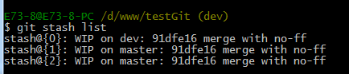

一：Git是什么？
Git是目前世界上最先进的分布式版本控制系统。
二：SVN与Git的最主要的区别？
SVN是集中式版本控制系统，版本库是集中放在中央服务器的，而干活的时候，用的都是自己的电脑，所以首先要从中央服务器哪里得到最新的版本，然后干活，干完后，需要把自己做完的活推送到中央服务器。集中式版本控制系统是必须联网才能工作，如果在局域网还可以，带宽够大，速度够快，如果在互联网下，如果网速慢的话，就纳闷了。
Git是分布式版本控制系统，那么它就没有中央服务器的，每个人的电脑就是一个完整的版本库，这样，工作的时候就不需要联网了，因为版本都是在自己的电脑上。既然每个人的电脑都有一个完整的版本库，那多个人如何协作呢？比如说自己在电脑上改了文件A，其他人也在电脑上改了文件A，这时，你们两之间只需把各自的修改推送给对方，就可以互相看到对方的修改了。
三：在windows上如何安装Git？
msysgit是 windows版的Git,如下：

需要从网上下载一个，然后进行默认安装即可。安装完成后，在开始菜单里面找到 "Git --> Git Bash",如下：
会弹出一个类似的命令窗口的东西，就说明Git安装成功。如下：
安装完成后，还需要最后一步设置，在命令行输入如下：
因为Git是分布式版本控制系统，所以需要填写用户名和邮箱作为一个标识。
注意：git config --global 参数，有了这个参数，表示你这台机器上所有的Git仓库都会使用这个配置，当然你也可以对某个仓库指定的不同的用户名和邮箱。
四：如何操作？
一：创建版本库。
什么是版本库？版本库又名仓库，英文名repository,你可以简单的理解一个目录，这个目录里面的所有文件都可以被Git管理起来，每个文件的修改，删除，Git都能跟踪，以便任何时刻都可以追踪历史，或者在将来某个时刻还可以将文件”还原”。
所以创建一个版本库也非常简单，如下我是D盘 –> www下 目录下新建一个testgit版本库。

pwd 命令是用于显示当前的目录。
1. 通过命令 git init 把这个目录变成git可以管理的仓库，如下：
这时候你当前testgit目录下会多了一个.git的目录，这个目录是Git来跟踪管理版本的，没事千万不要手动乱改这个目录里面的文件，否则，会把git仓库给破坏了。如下：
2. 把文件添加到版本库中。
首先要明确下，所有的版本控制系统，只能跟踪文本文件的改动，比如txt文件，网页，所有程序的代码等，Git也不列外，版本控制系统可以告诉你每次的改动，但是图片，视频这些二进制文件，虽能也能由版本控制系统管理，但没法跟踪文件的变化，只能把二进制文件每次改动串起来，也就是知道图片从1kb变成2kb，但是到底改了啥，版本控制也不知道。
下面先看下demo如下演示：
我在版本库testgit目录下新建一个记事本文件 readme.txt 内容如下：11111111
第一步：使用命令 git add readme.txt添加到暂存区里面去。如下：
如果和上面一样，没有任何提示，说明已经添加成功了。
第二步：用命令 git commit告诉Git，把文件提交到仓库。
现在我们已经提交了一个readme.txt文件了，我们下面可以通过命令git status来查看是否还有文件未提交，如下：
说明没有任何文件未提交，但是我现在继续来改下readme.txt内容，比如我在下面添加一行2222222222内容，继续使用git status来查看下结果，如下：
上面的命令告诉我们 readme.txt文件已被修改，但是未被提交的修改。
接下来我想看下readme.txt文件到底改了什么内容，如何查看呢？可以使用如下命令：
git diff readme.txt 如下：
如上可以看到，readme.txt文件内容从一行11111111改成 二行 添加了一行22222222内容。
知道了对readme.txt文件做了什么修改后，我们可以放心的提交到仓库了，提交修改和提交文件是一样的2步(第一步是git add 第二步是：git commit)。
如下：
二：版本回退：
如上，我们已经学会了修改文件，现在我继续对readme.txt文件进行修改，再增加一行
内容为33333333333333.继续执行命令如下：
现在我已经对readme.txt文件做了三次修改了，那么我现在想查看下历史记录，如何查呢？我们现在可以使用命令 git log 演示如下所示：
git log命令显示从最近到最远的显示日志，我们可以看到最近三次提交，最近的一次是,增加内容为333333.上一次是添加内容222222，第一次默认是 111111.如果嫌上面显示的信息太多的话，我们可以使用命令 git log –pretty=oneline 演示如下：
现在我想使用版本回退操作，我想把当前的版本回退到上一个版本，要使用什么命令呢？可以使用如下2种命令，第一种是：git reset --hard HEAD^ 那么如果要回退到上上个版本只需把HEAD^ 改成 HEAD^^ 以此类推。那如果要回退到前100个版本的话，使用上面的方法肯定不方便，我们可以使用下面的简便命令操作：git reset --hard HEAD~100 即可。未回退之前的readme.txt内容如下：
如果想回退到上一个版本的命令如下操作：
再来查看下 readme.txt内容如下：通过命令cat readme.txt查看
可以看到，内容已经回退到上一个版本了。我们可以继续使用git log 来查看下历史记录信息，如下：
我们看到 增加333333 内容我们没有看到了，但是现在我想回退到最新的版本，如：有333333的内容要如何恢复呢？我们可以通过版本号回退，使用命令方法如下：
git reset --hard 版本号 ，但是现在的问题假如我已经关掉过一次命令行或者333内容的版本号我并不知道呢？要如何知道增加3333内容的版本号呢？可以通过如下命令即可获取到版本号：git reflog 演示如下：
通过上面的显示我们可以知道，增加内容3333的版本号是 6fcfc89.我们现在可以命令
git reset --hard 6fcfc89来恢复了。演示如下：
可以看到 目前已经是最新的版本了。
三：理解工作区与暂存区的区别？
工作区：就是你在电脑上看到的目录，比如目录下testgit里的文件(.git隐藏目录版本库除外)。或者以后需要再新建的目录文件等等都属于工作区范畴。
版本库(Repository)：工作区有一个隐藏目录.git,这个不属于工作区，这是版本库。其中版本库里面存了很多东西，其中最重要的就是stage(暂存区)，还有Git为我们自动创建了第一个分支master,以及指向master的一个指针HEAD。
我们前面说过使用Git提交文件到版本库有两步：
第一步：是使用 git add 把文件添加进去，实际上就是把文件添加到暂存区。
第二步：使用git commit提交更改，实际上就是把暂存区的所有内容提交到当前分支上。
我们继续使用demo来演示下：
我们在readme.txt再添加一行内容为4444444，接着在目录下新建一个文件为test.txt 内容为test，我们先用命令 git status来查看下状态，如下：
现在我们先使用git add 命令把2个文件都添加到暂存区中，再使用git status来查看下状态，如下：
接着我们可以使用git commit一次性提交到分支上，如下：
四：Git撤销修改和删除文件操作。
一：撤销修改：
比如我现在在readme.txt文件里面增加一行 内容为555555555555，我们先通过命令查看如下：
在我未提交之前，我发现添加5555555555555内容有误，所以我得马上恢复以前的版本，现在我可以有如下几种方法可以做修改：
第一：如果我知道要删掉那些内容的话，直接手动更改去掉那些需要的文件，然后add添加到暂存区，最后commit掉。
第二：我可以按以前的方法直接恢复到上一个版本。使用 git reset --hard HEAD^
但是现在我不想使用上面的2种方法，我想直接想使用撤销命令该如何操作呢？首先在做撤销之前，我们可以先用 git status 查看下当前的状态。如下所示：
可以发现，Git会告诉你，git checkout -- file 可以丢弃工作区的修改，如下命令：
git checkout -- readme.txt,如下所示：
命令 git checkout --readme.txt 意思就是，把readme.txt文件在工作区做的修改全部撤销，这里有2种情况，如下：
-
readme.txt自动修改后，还没有放到暂存区，使用 撤销修改就回到和版本库一模一样的状态。
-
另外一种是readme.txt已经放入暂存区了，接着又作了修改，撤销修改就回到添加暂存区后的状态。
对于第二种情况，我想我们继续做demo来看下，假如现在我对readme.txt添加一行 内容为6666666666666，我git add 增加到暂存区后，接着添加内容7777777，我想通过撤销命令让其回到暂存区后的状态。如下所示：

注意：命令git checkout -- readme.txt 中的 -- 很重要，如果没有 -- 的话，那么命令变成创建分支了。
二：删除文件。
假如我现在版本库testgit目录添加一个文件b.txt,然后提交。如下：
如上：一般情况下，可以直接在文件目录中把文件删了，或者使用如上rm命令：rm b.txt ，如果我想彻底从版本库中删掉了此文件的话，可以再执行commit命令 提交掉，现在目录是这样的，
只要没有commit之前，如果我想在版本库中恢复此文件如何操作呢？
可以使用如下命令 git checkout -- b.txt，如下所示：
再来看看我们testgit目录，添加了3个文件了。如下所示：
五：远程仓库。
在了解之前，先注册github账号，由于你的本地Git仓库和github仓库之间的传输是通过SSH加密的，所以需要一点设置：
第一步：创建SSH Key。在用户主目录下，看看有没有.ssh目录，如果有，再看看这个目录下有没有id_rsa和id_rsa.pub这两个文件，如果有的话，直接跳过此如下命令，如果没有的话，打开命令行，输入如下命令：
ssh-keygen -t rsa –C “youremail@example.com”, 由于我本地此前运行过一次，所以本地有，如下所示：
id_rsa是私钥，不能泄露出去，id_rsa.pub是公钥，可以放心地告诉任何人。
第二步：登录github,打开” settings”中的SSH Keys页面，然后点击“Add SSH Key”,填上任意title，在Key文本框里黏贴id_rsa.pub文件的内容。
点击 Add Key，你就应该可以看到已经添加的key。
-
如何添加远程库？
现在的情景是：我们已经在本地创建了一个Git仓库后，又想在github创建一个Git仓库，并且希望这两个仓库进行远程同步，这样github的仓库可以作为备份，又可以其他人通过该仓库来协作。
首先，登录github上，然后在右上角找到“create a new repo”创建一个新的仓库。如下：
在Repository name填入testgit，其他保持默认设置，点击“Create repository”按钮，就成功地创建了一个新的Git仓库：
目前，在GitHub上的这个testgit仓库还是空的，GitHub告诉我们，可以从这个仓库克隆出新的仓库，也可以把一个已有的本地仓库与之关联，然后，把本地仓库的内容推送到GitHub仓库。
现在，我们根据GitHub的提示，在本地的testgit仓库下运行命令：
git remote add origin https://github.com/tugenhua0707/testgit.git
所有的如下：

把本地库的内容推送到远程，使用 git push命令，实际上是把当前分支master推送到远程。
由于远程库是空的，我们第一次推送master分支时，加上了 –u参数，Git不但会把本地的master分支内容推送的远程新的master分支，还会把本地的master分支和远程的master分支关联起来，在以后的推送或者拉取时就可以简化命令。推送成功后，可以立刻在github页面中看到远程库的内容已经和本地一模一样了，上面的要输入github的用户名和密码如下所示：
从现在起，只要本地作了提交，就可以通过如下命令：
git push origin master
把本地master分支的最新修改推送到github上了，现在你就拥有了真正的分布式版本库了。
2. 如何从远程库克隆？
上面我们了解了先有本地库，后有远程库时候，如何关联远程库。
现在我们想，假如远程库有新的内容了，我想克隆到本地来 如何克隆呢？
首先，登录github，创建一个新的仓库，名字叫testgit2.如下：
如下，我们看到：
现在，远程库已经准备好了，下一步是使用命令git clone克隆一个本地库了。如下所示：
接着在我本地目录下 生成testgit2目录了，如下所示：
六：创建与合并分支。
在版本回填退里，你已经知道，每次提交，Git都把它们串成一条时间线，这条时间线就是一个分支。截止到目前，只有一条时间线，在Git里，这个分支叫主分支，即master分支。HEAD严格来说不是指向提交，而是指向master，master才是指向提交的，所以，HEAD指向的就是当前分支。
首先，我们来创建dev分支，然后切换到dev分支上。如下操作：
git checkout 命令加上 –b参数表示创建并切换，相当于如下2条命令
git branch dev
git checkout dev
git branch查看分支，会列出所有的分支，当前分支前面会添加一个星号。然后我们在dev分支上继续做demo，比如我们现在在readme.txt再增加一行 7777777777777
首先我们先来查看下readme.txt内容，接着添加内容77777777，如下：
现在dev分支工作已完成，现在我们切换到主分支master上，继续查看readme.txt内容如下：
现在我们可以把dev分支上的内容合并到分支master上了，可以在master分支上，使用如下命令 git merge dev 如下所示：
git merge命令用于合并指定分支到当前分支上，合并后，再查看readme.txt内容，可以看到，和dev分支最新提交的是完全一样的。
注意到上面的Fast-forward信息，Git告诉我们，这次合并是“快进模式”，也就是直接把master指向dev的当前提交，所以合并速度非常快。
合并完成后，我们可以接着删除dev分支了，操作如下：
总结创建与合并分支命令如下：
查看分支：git branch
创建分支：git branch name
切换分支：git checkout name
创建+切换分支：git checkout –b name
合并某分支到当前分支：git merge name
删除分支：git branch –d name
-
如何解决冲突？
下面我们还是一步一步来，先新建一个新分支，比如名字叫fenzhi1，在readme.txt添加一行内容8888888，然后提交，如下所示：
同样，我们现在切换到master分支上来，也在最后一行添加内容，内容为99999999，如下所示：
现在我们需要在master分支上来合并fenzhi1，如下操作：
Git用<<<<<<<，=======，>>>>>>>标记出不同分支的内容，其中<<<HEAD是指主分支修改的内容，>>>>>fenzhi1 是指fenzhi1上修改的内容，我们可以修改下如下后保存：
如果我想查看分支合并的情况的话，需要使用命令 git log.命令行演示如下：
3.分支管理策略。
通常合并分支时，git一般使用”Fast forward”模式，在这种模式下，删除分支后，会丢掉分支信息，现在我们来使用带参数 –no-ff来禁用”Fast forward”模式。首先我们来做demo演示下：
-
创建一个dev分支。
-
修改readme.txt内容。
-
添加到暂存区。
-
切换回主分支(master)。
-
合并dev分支，使用命令 git merge –no-ff -m “注释” dev
-
查看历史记录
截图如下：

分支策略：首先master主分支应该是非常稳定的，也就是用来发布新版本，一般情况下不允许在上面干活，干活一般情况下在新建的dev分支上干活，干完后，比如上要发布，或者说dev分支代码稳定后可以合并到主分支master上来。
七：bug分支：
在开发中，会经常碰到bug问题，那么有了bug就需要修复，在Git中，分支是很强大的，每个bug都可以通过一个临时分支来修复，修复完成后，合并分支，然后将临时的分支删除掉。
比如我在开发中接到一个404 bug时候，我们可以创建一个404分支来修复它，但是，当前的dev分支上的工作还没有提交。比如如下：
并不是我不想提交，而是工作进行到一半时候，我们还无法提交，比如我这个分支bug要2天完成，但是我issue-404 bug需要5个小时内完成。怎么办呢？还好，Git还提供了一个stash功能，可以把当前工作现场 ”隐藏起来”，等以后恢复现场后继续工作。如下：
所以现在我可以通过创建issue-404分支来修复bug了。
首先我们要确定在那个分支上修复bug，比如我现在是在主分支master上来修复的，现在我要在master分支上创建一个临时分支，演示如下：

修复完成后，切换到master分支上，并完成合并，最后删除issue-404分支。演示如下：
现在，我们回到dev分支上干活了。

工作区是干净的，那么我们工作现场去哪里呢？我们可以使用命令 git stash list来查看下。如下：

工作现场还在，Git把stash内容存在某个地方了，但是需要恢复一下，可以使用如下2个方法：
-
git stash apply恢复，恢复后，stash内容并不删除，你需要使用命令git stash drop来删除。
-
另一种方式是使用git stash pop,恢复的同时把stash内容也删除了。
演示如下
八：多人协作。
当你从远程库克隆时候，实际上Git自动把本地的master分支和远程的master分支对应起来了，并且远程库的默认名称是origin。
-
要查看远程库的信息 使用 git remote
-
要查看远程库的详细信息 使用 git remote –v
如下演示：
一：推送分支：
推送分支就是把该分支上所有本地提交到远程库中，推送时，要指定本地分支，这样，Git就会把该分支推送到远程库对应的远程分支上：
使用命令 git push origin master
比如我现在的github上的readme.txt代码如下：
本地的readme.txt代码如下：
现在我想把本地更新的readme.txt代码推送到远程库中，使用命令如下：
我们可以看到如上，推送成功，我们可以继续来截图github上的readme.txt内容 如下：

可以看到 推送成功了，如果我们现在要推送到其他分支，比如dev分支上，我们还是那个命令 git push origin dev
那么一般情况下，那些分支要推送呢？
-
master分支是主分支，因此要时刻与远程同步。
-
一些修复bug分支不需要推送到远程去，可以先合并到主分支上，然后把主分支master推送到远程去。
二：抓取分支：
多人协作时，大家都会往master分支上推送各自的修改。现在我们可以模拟另外一个同事，可以在另一台电脑上（注意要把SSH key添加到github上）或者同一台电脑上另外一个目录克隆，新建一个目录名字叫testgit2
但是我首先要把dev分支也要推送到远程去，如下
接着进入testgit2目录，进行克隆远程的库到本地来，如下：
现在目录下生成有如下所示：
现在我们的小伙伴要在dev分支上做开发，就必须把远程的origin的dev分支到本地来，于是可以使用命令创建本地dev分支：git checkout –b dev origin/dev
现在小伙伴们就可以在dev分支上做开发了，开发完成后把dev分支推送到远程库时。
如下：
小伙伴们已经向origin/dev分支上推送了提交，而我在我的目录文件下也对同样的文件同个地方作了修改，也试图推送到远程库时，如下：
由上面可知：推送失败，因为我的小伙伴最新提交的和我试图推送的有冲突，解决的办法也很简单，上面已经提示我们，先用git pull把最新的提交从origin/dev抓下来，然后在本地合并，解决冲突，再推送。
git pull也失败了，原因是没有指定本地dev分支与远程origin/dev分支的链接，根据提示，设置dev和origin/dev的链接：如下：
这回git pull成功，但是合并有冲突，需要手动解决，解决的方法和分支管理中的 解决冲突完全一样。解决后，提交，再push：
我们可以先来看看readme.txt内容了。
现在手动已经解决完了，我接在需要再提交，再push到远程库里面去。如下所示：
因此：多人协作工作模式一般是这样的：
-
首先，可以试图用git push origin branch-name推送自己的修改.
-
如果推送失败，则因为远程分支比你的本地更新早，需要先用git pull试图合并。
-
如果合并有冲突，则需要解决冲突，并在本地提交。再用git push origin branch-name推送。
Git基本常用命令如下：
mkdir： XX (创建一个空目录 XX指目录名)
pwd： 显示当前目录的路径。
git init 把当前的目录变成可以管理的git仓库，生成隐藏.git文件。
git add XX 把xx文件添加到暂存区去。
git commit –m “XX” 提交文件 –m 后面的是注释。
git status 查看仓库状态
git diff XX 查看XX文件修改了那些内容
git log 查看历史记录
git reset --hard HEAD^ 或者 git reset --hard HEAD~ 回退到上一个版本
(如果想回退到100个版本，使用git reset –hard HEAD~100 )
cat XX 查看XX文件内容
git reflog 查看历史记录的版本号id
git checkout -- XX 把XX文件在工作区的修改全部撤销。
git rm XX 删除XX文件
git remote add origin https://github.com/tugenhua0707/testgit 关联一个远程库
git push –u(第一次要用-u 以后不需要) origin master 把当前master分支推送到远程库
git clone https://github.com/tugenhua0707/testgit 从远程库中克隆
git checkout –b dev 创建dev分支 并切换到dev分支上
git branch 查看当前所有的分支
git checkout master 切换回master分支
git merge dev 在当前的分支上合并dev分支
git branch –d dev 删除dev分支
git branch name 创建分支
git stash 把当前的工作隐藏起来 等以后恢复现场后继续工作
git stash list 查看所有被隐藏的文件列表
git stash apply 恢复被隐藏的文件，但是内容不删除
git stash drop 删除文件
git stash pop 恢复文件的同时 也删除文件
git remote 查看远程库的信息
git remote –v 查看远程库的详细信息
git push origin master Git会把master分支推送到远程库对应的远程分支上